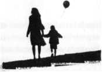

Brian Darby kendi mutfağında ölmüştü. Göğsüne sıkılan birbirine yakın üç kurşunla... D.D.'nin ilk izlenimi Polis I .eoni'nin atış derslerinde hayli başanlı olduğu yönündeydi çünkü kurşunlar tam da kitabına uygun olarak saplanmıştı gövdeye. Tıpkı akademiye yeni katılan öğrencilere de denildiği gibi ne kafa hedef alınmıştı, ne de amaç sadece karşıdakini yaralamaktı. Göğüs bir insanı vurabileceğiniz en iyi noktadır. Eğer silahınızı buraya doğrulttuysanız, kendiniz ya da vurmak istediğiniz insan için endişe etseniz iyi olur çünkü bu niyetinizin gerçekten öldürmek olduğu anlamına gelir.
Leoni işini kusursuz yapmıştı. Şimdi önemli olan bir eyalet polisini eşini öldürmeye götürecek nedeni bulmaya gelmişti. Bir mesele daha vardı, çocuk nereye kaybolmuştu?
Polis memuru Leoni şu anda evin en çok güneş alan odasının önünde gözetim altında tutuluyor, Acil Şems ekiplerince başındaki çirkin yarığa ve ondan da çirkin morarmış gözüne müdahalede bulunuluyordu. Leoni'nin sendika temsilcisi çoktan olay yerine ulaşmış, avukatı da yola çıkmıştı.
Dışarıda bir düzine daha eyalet polisi baş göstermiş, kaldırım da yan yana durarak Bostonlu meslektaşlarının olay yerini incelemesini sağlarken olay hakkında bilgi alabilmek için dokuz yüz metre uzakta bekleşen basımn görüntü almasını engellemeye çalışıyorlardı.
Memurlar dışarıda işlerini yaparlarken, hemen yan taraftaki okulun önüne park edilmiş beyaz kumanda minibüsünde Bostonlu am irler ve eyalet polis gücünün amirleri arasında bitmek tükenmek bilmeyen bir tartışma yaşanıyordu. Suffolk Eyalet Savcılığından cinayet masası müfettişi muhtemelen araçta arabuluculuk görevi yapıyordu. Bir yandan Massachusetts Eyalet Polisi başkomişerine eyaletin bu vakayı kendine bağlı bir polis m emurunungerçekleştirm esi sebebiyle görmezden gelemeyeceğini hatırlatırken, bir yandan da Boston Polisi'ne eyaletin kendine bağlı polislerden birinin dosyasma bakma isteklerinin çok da yersiz olmadığını anlatmaya çalışıyordu.
Her iki birimin de birbirine üstünlük kurmaya çalıştığı şualarda, nihayet kodamanlardan birisi altı yaşmda, kahverengi saçlı, mavi gözlü, bir otuz yedi boyunda, yirmi kilo ağırlığında ve ön iki dişi eksik olan kayıp Sophie Leoni için Acil Kayıp İlam vermeyi akıl edebilmişti. Sophie'nin üzerinde muhtemelen o gece giydiği sarı at desenli uzun kollu pembe pijaması vardı. İddia edildiğine göre en son önceki gece saat on otuz sularında Memur Leoni'nin saat on bir devriyesini devrettiğini haber vermesinden hemen önce görülmüştü.
D.D.'nin, Tessa Leoni'ye soracağı pek çok soru vardı. Ama maalesef, şu an için bu pek mümkün görünmüyordu. Memur Leoni şoktaydı, -kaldı ki sendika temsilcisi de şu an bu tür bir sorgulamaya izin vereceğe pek benzemiyordu. Memur Leoni'nin acil bir tıbbi müdahaleye ihtiyacı vardı. Eğer isterse kendisine hemen bir yasal danışman atanma hakkı vardı. Olay yerine gelen ilk ekibe bir açıklamada bulunmuştu. Bundan sonraki sorular için avukatınm onayını beklemek gerekecekti.
D.D., Memur Leoni'nin şu an yapmak istediği pek çok şey olduğunu düşündü. Bunlardan biri de Boston polisleriyle birlikte kaybolan kızının peşine düşmek olmalıydı.
D.D. şimdilik biraz geri planda kalmayı tercih etti. Olay yeri oldukça yoğundu, ilgilenilmesi gereken daha birçok sorun vardı. Boston bölge polislerinden olay yerini didik didik etmelerini, Boston cinayet masasından delil bulmalarını, üniformalı pek çok polisten civarda araştırma yapmalannı istemişti. Cinayet Leoni'nin beylik tabancasıyla işlendiğinden Balistik İnceleme Ekibi de hemen olay yerine intikal etin işti. Bu sayede zaten küçük olan olay mahalli daha da sıkış tıkış olmuştu.
Bobby haklıydı; polis diline göre dosya gerçekten tam anlamıyla bir keşmekeşti.
Bu keşmekeş tamamıyla D.D.'ye emanetti.
D.D. olay yerine geleli yarım saat olmuştu. Arabasını altı blok ötede vızır vızır işleyen VVashington Caddesi ile nispeten daha sessiz olan bir yan caddenin arasına park etm işti. Allston Brighton Boston'un en kalabalık yerleşim yerlerinden biriydi. Bölge Boston Koleji, Boston Üniversitesi ve Harvard İşletme Okulu'nun öğrencileri, akademik ve destek personeli ve öğrenci aileleriyle adeta istila edilmiş gibiydi. Yaşamak için hayli pahalı bir yerdi. Bu nedenle paralarının az olmasıyla meşhur öğrenci kesimi ve akademik personelce tercih sebebi olması da ayrı bir ironiydi. Sonuç olarak ortaya üç katlı ayakta zor duran apartmanların üst üste yığıldığı, her biri bir öncekinden daha çok daireye sahip sıra sıra dizilmiş bir caddeler sürüsü çıkmıştı. Aileler altlarında yirmi dört saat açık marketlerin ve bitmek bilmeyen yıkama arzusuna cevap vermeye çalışan çamaşırhanelerin bulunduğu bu apartmanlara doluşmuşlardı.
D.D.'ye göre burası şehrin vahşi hayat kısmıydı. Buralarda Back Bay ya da Beacon Hill tarzı ne ferfoıje korkuluklu evler, ne de süslü püslü tuğla evler bulabilirdiniz. Burada, konumu dolayısıyla değerli ama kutu gibi küçücük apartmanlardaki yine kutu gibi küçücük dairelere sırf işinize yarıyor diye bir servet öderdiniz. Buradaki park sistemi sona kalan dona kalır sistemi üzerine kurulduğundan, insanların çoğu vaktini araçlan için yer avlamaya çalışarak geçirirlerdi. İşe gidişiniz ayn, dönüşünüz ayn bir problemdi. Eve geldiğinizde mutfağınız ancak mikrodalgada ısıtabildiğiniz hazır yemeğinizi ayakta yiyebileceğiniz kadar büyük olurdu. Sonraki istikametiniz belki de dünyanın en küçük şiltesini yerleştirdiğiniz yatak odanız olurdu.
Ama yine de bir polis memuru için hiç de fena bir yer sayılmazdı. Eyaleti ikiye bölen Mass Pike ana yoluna oldukça yakın bir konumu vardı. Pike'dan doğuya gittiğinizde 1-93 otobanına, batıya gittiğinizde 128 numaralı otobana kolaylıkla ulaşabilirdiniz. Yani, Leoni devriye gezen bir memurun bulunması gereken can alıcı noktalara buradan birkaç dakika içinde ulaşabilirdi. Gayet zekiceydi.
Memur Leoni'nin evi de D.D.'nin oldukça hoşuna gitmişti aslında. Allston Brighton keşmekeşinin ortasında, oldukça samimi, bir yanında üç katlı apartman binaları ve diğer yanında tuğla okul binasının arasına sıkışıp kalmış müstakil bir evdi. Neyse ki, pazar olması dolayısıyla okul kapalıydı. Böylece olay yerine akın eden yetkililer hem okulun park alanını kullanabiliyor, hem de suç mahalline panikle koşuşturan velilerin yeni bir panik havasından kendilerini soyutlamış oluyorlardı.
Sessiz bir çevreydi. Yani en azından bir süre öncesine kadar.
Memur Leoni'nin iki yatak odalı eski bungalov tarzı evi bir yamaç sırtına inşa edilmişti. Beyaz çerçeveli bir tavan penceresinin olduğu çatı, kırmızı tuğlalarla örülmüş çift araçlık garajın üzerini de örtüyordu. Yola sıfir yürüyüş yolunun sonundaki tek taraflı merdivenler hem evin giriş kapısına, hem de D.D.'nin bugüne kadar Boston'da gördüğü en büyük bahçeye çıkıyordu.
Güzel bir aile eviydi. Ev içinde bir çocuk yetiştirebilecek, bahçede bir köpek besleyip, salıncak koyabilecek kadar büyüktü. D.D. kara kışın ortasında bahçeyi turladığı şu an bile yazın burada verilen barbekü partilerini, oynanan oyunları, arka verandada yenen uzun yemekleri gözünün önüne getirebiliyordu.
Böyle bir evde pek çok güzel şey yaşanabilecekken, bir anda ters giden şey ne olmuştu?
D.D. cevabın bahçede gizli olduğunu düşünüyordu. Ne de olsa kocaman, geniş, bunca kalaba lığ m ortasında tamamen korunmasız bir yerdi.
Okulun bahçesinden geçerek doğruca evin bahçesine ulaşmak mümkündü. Dört farklı apartmanın arkasından çıkıp gelerek de yine bu noktaya gelinebilirdi. Leoni'nin evine Massachusetts polisinin yaptığı gibi ön kapının merdivenlerinden gelinebileceği gibi, arka caddeden de ulaşılabilirdi ki D.D. de gelirken öyle yapmıştı. Yani arkadan, önden, sağdan, soldan, evin içine dört bir koldan girmek ve de çıkmak hiç de zor değildi.
Elbette ki bunu buraya gelen her üniformalı polisin de görebilmesi gerekliydi. Ama D.D. şu an bahçeye baktığında üzerinde ayak izi olmayan tek bir kar parçası, izlerin üst üste yığılmadığı küçücük bir yer bile göremiyordu.
D.D. üzerindeki kabanına biraz daha sıkı sarılıp, buz gibi havada can sıkıntısıyla ağzından buhar olup çıkan derin bir nefes verdi. Lanet olası geri zekâlılar.
O sırada Bobby Dodge arka verandada göründü. Görünüşe göre halen kendine her yere hâkim bir gözetleme kulesi bulamamıştı. Yerdeki bozulmuş kar yığınlarına cam sıkkın bir halde bakışma bakılırsa, onun da düşünceleri D.D.'den farklı değildi. O an D. D.'yi fark etti. Kafasındaki siyah şapkasının siperliğini martın ilk günlerinin soğuğuna karşı gard alarak verandanın merdivenlerinden inmeye başladı.
D.D., Bobby'nin gelmesini beklemeden, "Memurların, olay mahallimin her yerini ayak izleriyle bozmuşlar," diye seslendi. "Bunu hiç unutmayacağım."
Bobby ise ellerini siyah kaşe kabanının ceplerine sokup, yaklaşırken omuzlarım silkinişti. Eski bir keskin nişancı olan Bobby uzun saatler boyunca kıpırdamadan durmak zorunda olmanın verdiği bir alışkanlıkla elinden geldiğince az hareket ederek yaklaşıyordu. Onun da vücudu pek çok keskin nişancının olduğu gibi, güçlü, kaslı, ufak tefekti ve sert bir yüz ifadesi vardı. Onu gören hiç kimse ilk etapta yakışıklı olduğunu söyleyemezdi belki, ama çoğu kadının onu çekici bulduğu da bir gerçekti.
D.D. de bir zamanlar o kadınlardan biriydi. Önceleri sevgili oldularsa da, zaman içinde arkadaş olarak daha iyi geçindiklerini fark etmişlerdi. Zaten iki yıl sonra Bobby, An-nabelle Granger ile tanışıp evlenmişti. D.D. henüz evliliklerini hazmedememişken çiftin bir de kızlan olmuştu.
Neyse ki D. D. de çok sürmeden Alex'i bulmuştu. İşler nihayet yoluna giriyordu galiba. Öyle miydi gerçekten?
Bobby gelip D.D.'nin önünde durdu. "Polis memurlarının işi insanlann can güvenliğim sağlamaktır," dedi. "Delilleri koruyacak olanlar dedektiflerdir."
"Memurların olay mahallimin içine etmişler. Bunu affetmeyeceğim gibi unutmayacağım da."
Bobby en sonunda gülümsedi. "Ben de seni özledim, D.D."
"Annabelle nasıl?"
"Gayet iyi, teşekkürler."
"Peki ya bebek?"
"Carina da emeklemeye başladı bile. Hâlâ inanamıyorum."
BunaD.D. de inanamıyordu. Kahretsin, yaşlanıyorlardı galiba.
"Alex nasıl?" diye sordu Bobby.
"İyi, iyi." D.D. bu kıs a konuş m ayı bitirdiğini be İli edercesine eldivenli elini havada sallamıştı. "Sence burada neler olmuş?"
Bobby omuzlarım silkip, konuşmadan önce epeyce sessiz kaldı. Pek çok dedektif olay yerinde somut çalışmalar yapmayı severken, Bobby olay yerini gözlemleyerek inceleyenlerdendi. Ve pek çok dedektif buldukları her şeyi bir an önce dillendirmek için çabalarken, Bobby gerçek bir delile ulaşmadan konuşmayanlardandı.
D.D. onun bu yönüne saygı duysa da, onu şımartmamak için bunu asla dile getirmemeye özen gösterirdi.
Bobby en sonunda, "İlk bakışta aile içi bir mesele gibi görünüyor," dedi. "Koca, karısına bir bira şişesiyle saldınyor, kadın da beylik tabancasıyla kendini koruyor."
"Peki, elimizde aile içi şiddet hattının daha önceden arandığına dair bir bilgi var mı?"
Bobby başım iki yana salladı, D.D. de anladığım belli edercesine onayladı onu. Şiddet hattının aranmamış olması çok da bir şey ifade etmiyordu aslmda çünkü polisler yardım istemekten nefret ederlerdi, özellikle de başka polislerden. Eğer Brian Darby eşini dövüyorsa bile, Leoni büyük ihtimalle olanları sineye çekiyordu.
"Onu tanıyor muydun?" diye sordu D.D.
'Hayır. O başladıktan kısa bir süre sonra ben devriyeyi bıraktım. Zaten sadece dört yıldır bu meslekte."
"Peki, onu tam yanlar nasıl biliyor?"
"Kusursuz bir memur olarak. Genç. Framingham Akademisinden mezun olmuş. Hep gece vardiyasında çalışıp, gündüzlerini kızıyla geçirmiş, bu nedenle diğer polislerin arasına pek kanştığı söylenemez."
"Sadece gece vardiyasında mı çalışmış?"
Bobby şaşkınlıkla tek kaşını havaya dikti. "Devriye memurlarının çalışma saatleri gerçekten hayli zordur. Stajyer bir polis memuru başka bir saat dilimine geçmeden önce en az bir yılını gece vardiyasında geçirmek zorundadır. O bir senenin sonunda bile, yine de kıdeme bakılır. Dört yıllık yeni bir memur için? Sanınm gün ışığını görebilmesi için bir yıl daha çalışması gerekecekti."
"Ben de hep dedektif olmanın berbat olduğunu düşünürdüm."
"Boston polislerinin mızmızlığını bilmeyen yoktur zaten," dedi Bobby.
"Lütfen, en azından biz kar birikintilerindeki delilleri ayak izlerimizle mahvetmiyoruz."
Bobby bu söz üzerine suratını ekşitti. Yeniden her yanında polislerin gezindiği bahçeyi incelemeye koyuldular.
D.D. bu kez,-"Kaç yıllık evlilermiş?" diye sordu.
" Üç yıl."
"Bu da demek oluyor ki Leoni kocasıyla tanıştığında halihazırda bir polis memuruydu ve de bir kız vardı."
Bobby buna bir soru olmaması nedeniyle cevap vermemişti.
D.D. evin içinde yaşananları anlamak istercesine, "Yani adam evlenmeden önce neyle karşılaşacağım biliyordu," dedi yükseksesle. "Bütün gece eve gelmeyen bir eş. Tümgeceve gündüz bakım isteyen küçük bir kız."
"Buralarda olduğu zamanlar için, evet."
" Bu da ne demek?"
Bobby cebinden bir defter çıkarıp, oraya yazdığı nota göz atarak, "Adam denizciymiş," dedi. "Denize açıldığmda altmış gün boyunca evine hiç gelmiyormuş. Yani altmış gün denizde, altmış gün evinde. Çocuklardan biri Memur Leoni'nin yaptığı konuşmalardan öğrenmiş."
Bu kez kaşım havaya dikme sırası D.D.'ye gelmişti. "Bir bakalım, kadının çalışma saatleri dengesiz. Ne var ki kocasının ki onunkinden çok daha dengesiz. Çok ilginç. Adam iri biri miymiş?" D. D. mide hassasiyeti sebebiyle cesede yakından bakmamıştı.
"Bir yetmiş yedi boyunda, doksan dokuz kilo," diyerek yanıtladı Bobby. "Ve de kaslı birisi, yağ tulumu değil. Sanıyorum ki ağırlık çalışıyormuş."
" Vurdu mu devirenlerden yani."
"Memur Leoni ise onun tam aksine, bir altmış iki boyunda, elli dört kilo. Bu da adamın fıziken avantajlı durumda olduğu anlamına geliyor."
D. D. başım "evet" anlamında salladı. Bir polis memuru elbette ki yumruk yumruğa bir kapışmada ne yapacağımn eğitimini alıyordu. Ama ne olursa olsun ufak tefek bir kadının yapılı bir erkek karşısında kendini koruması halen bir sorundu. Üstüne üstlük muhatap işin içine bir de tekmelerini katan bir koca olduğunda işler daha da sarpa sarıyordu. Bayan polis memurlarının çoğu akademide öğrendikleri pek çok şeyi kendi evlerinde uygulayamıyorlardı. Yani Memur Leoni'nin morarmış gözü D.D.'nin bayan meslektaşlannda gördüğü ne ilk ne de son gözdü.
Bobby, "Olay Memur Leoni'nin eve geldiği sırada yaşanmış," dedi. "Üniforması hâlâ üzerindeymiş."
D.D. bu cümleyi biraz düşünerek tek kaşını yine havaya kaldırdı. "Polis yeleği üzerinde miymiş?"
"Prosedür gereği, gömleğinin içinden giymiş."
"Peki ya kemeri?"
"Sig Sauer'ini doğrudan kılıfından çıkarmış."
"Kahretsin." D.D. başım iki yana salladı. "Tam bir muamma. "
Bu da bir soru olmadığına göre, Bobby yine sessiz kalmayı tercih etmişti.
Üniforma ve varlığından bahsedilmesine bile gerek, olmayan polis kemeri işleri tamamen değiştiriyordu. Mesleğe yeni başlayan her polis, Memur Leoni'nin saldın sırasında yeleğinin üzerinde olduğunu fark edebilirdi. Bu durumda doksan dokuz kiloluk bir erkek gücünün ona zarar verebilmesi hayli güçtü. İkincisi, bir memurun saldın anında kendini koruyabilmesi için elinin altındaki polis kemerinde tabancasından önce kullanabileceği pek çok başka araç vardı. Katlanabilen demir cop, şok tabancası, biber gazı hatta kelepçe gibi birçok alet...
Her polis memuru meslek için gerekli eğitimi alırken, aynı zamanda karşısındaki tehlikenin büyüklüğünü tartıp, ona uygun silahı seçebilme konusunda da eğitilir. Sırf birisi size bağırdı diye silahmıza davranamazsımz. Hatta size vursa bile, tabancamz yine de ilk kullanacağınız silahınız olmaz.
Ama Memur Leoni ilk olarak tabancasına davranmıştı.
D.D. artık TessaLeoni'nin sendika danışmanının neden yasal danışmamn gelmesi konusunda ısrarcı olduğunu ve Leoni'nin polise konuşmasına neden müsaade etmediğini daha iyi anlıyordu.
D.D. derin bir iç çekip alnını kaşıdı. "Aklım almıyor. Hadi buna şiddet görmüş kadm sendromu diyelim. Adam kadım epey hırpaladıktan sonra, kadm en sonunda kendini kaybedip tetiği çekmiş olsun. Bu durum mutfakta bulunan cesede ve diğer odada tıbbi müdahale gören kadına bir açıklık getirebilir. Peki ya çocuk? Çocuk nerede?"
"Belki de bugünün kavgası dün geceden başlamıştır. Üvey babadan dayak yiyen küçük kız evden kaçm ıştır."
Hem D. D., hem de Bobby gözlerini yere çevir dilerse de artık karın üzerinde küçük ayak izlerinin olduğunu gösteren tek bir yer yoktu.
"Civardaki hastaneler arandı mı?" diye sordu D.D. "Polisler çevreyi araştırıyorlar mı?"
"Acil Kayıp ilanı verildi. Artık o kadar da aptal değiliz."
DJD. 'nin gözlerini yeniden yerdeki kar birikintilerine dikmesiyle, Bobby sesini kesmesi gerektiğini anlam işti.
D.D. "Peki kızın öz babası?" diyerek olaya bir de başka bir açıdan yaklaşmayı denedi. "Eğer Brian Darby, Sophie'nin üv ey babası ise, kızın öz babası nerede ve o tüm buy aşanan-lara nasıl bir açıklama getirecek?"
"Öz babası yok," diye yanıtladı Bobby.
"Bildiğim kadanyla bu biyolojik olarak imkânsız."
"Doğum belgesinde babanın adı yazmıyor, akademide ziyaretine gelen hiçbir erkek olmamış ve resmimizde kızmı her hafta sonu ziyaret eden sorumlu bir baba profili de yok." Bobby omuzlanm silkti. "Özbabası yok."
D.D.'nin bir an adeta kanı çekildi. "TessaLeoni onu bu resimde görmek istemediği için mi yok, yoksa baba kendisi olmak istemediği için mi yok? Ya da ah evet, son birkaç gecede tüm bu dinamikler değişti mi?"
Bobby yine omuzlarını silkerek cevapladı onu.
D.D. olması muhtemel pek çok seçeneği düşünerek dudaklarını büzdü. Ebeveynlik haklarını geri istemesi muhtemel bir baba. Ya da birbirinden daha yoğun iki kariyer ve küçük bir çocuğun bulunduğu gergin bir ev.ortamı. Bu durumda A seçeneğinde öz baba pekâlâ kendi çocuğunu kaçırmış olabilirdi. B seçeneğinde ise üvey baba ya da öz anne çocuğu döverek öldürmüşlerdi.
"Sence kız ölmüş müdür?" diye sordu Bobby.
*'Bir bilebilsem." D.D. küçük kızı düşündükçe cam daha da sıkılıyordu. Kocasını öldüren bir kadın, kabul edilebilirdi. Ama ya çocuk? Bu dosya gerçekten de çok can sıkıcı olacaktı.
"Çocuğu öldürüp gömmüş olamazlar," diyerek sesli düşündü D.D., "Toprak kazılamayacak kadar buzlu ve sert. Eğer kız ölmüşse... muhtemelen evin içinde bir yerlere gizlenmiş olmalı. Garaja, tavana, döşeme boşluklarına ya da kullanılmayan dondurucuya belki."
Bobby başını iki yana salladı.
D.D., Bobby'nin tavnndan yanıldığını anlamıştı. D.D. mutfak ve camekânlı oda dışında evin diğer bölümlerine bakmayı göze alamamıştı. Ama evi istila eden üniformalı sayısına bakılırsa, yüz metre karelik alanın her bir karışmm titizlikle incelendiği ortadaydı.
"Ben bu olayın öz babayla bir ilgisi olduğunu sanmıyorum," diyerek söze başladı Bobby. "Eğer öz babamn huzursuzluk çıkardığına dair bulgular olsaydı, Tessa Leoni'nin ağzından çıkan ilk sözler bu gerçeğe ait olurdu. Pekâlâ, Gidin o piç kurusu 'eski sevgilimle görüşün, beni kızımı elimden almakla tehdit ediyor, diyebilirdi. Ama böyle bir şeyden hiç bahsetmedi."
"Çünkü başındaki sendika temsilcisi onu susturuyor."
"Susturuyor çünkü Leoni'nin kendini zan altında bırakacak cümleler kurmasından korkuyor. Gerçi başkalarını zan altında bırakacak şeyler söylemesi de en doğal yasal hakkı."
D.D. hiç de akla yatmayan bir durum değil, diye düşündü. "Peki, öz babayı şimdilik bir kenara bırakalım. Bu durumda sanki evde yolunda gitmeyen bir şeyler yaşanmış gibi. Memur. Leoni'nin yüzünden de anlaşılacağı üzere Brian Darby denen adam karısına şiddet uygulayan biri. Belki de küçük kızı da dövmüştür ve kız ölmüştür. Memur Leoni sabah eve döndüğünde kızım o şekilde gördüğünde her ikisi de paniğe kapılmış olabilirler. Üvey baba korkunç bir şey yapmış ve polis memuru olan mine de buna göz yummuştur. Bu sayede o da bu işe bulaşmıştır. Kızı arabaya atıp, götürüp bir yerlere atmışlardır. Eve döndüklerinde kavga etmişler ve Tessa Leoni yaşadıklanmn ağırlığıyla silahım çekip kocasını vurmuştur."
Bobby, "Ne yani Memur Leoni öz kızının ortadan kaldırılmasına yardım mı etmiştir, hem de eve dönüp kocasım öldürmeden önce, bunu mu diyorsun?"
D.D. gözlerini dosdoğru Bobby’ye dikti. "Varsayımlarda bulunma, Bobby. Sen bunu herkesten daha iyi bilirsin."
Bobby tek kelime etmeden sadece D.D.'ye baktı.
D.D., "Memur Leoni'nin devriye aracım görmek istiyorum," dedi.
"Sanıyorum ki detektifler şu an o konuda inceleme yapıyorlar."
"Brian'ın da arabasını görmeliyiz."
"İki bin yedi model bir GMC Denali. Ekibin çoktan arabaya girmiş durumda."
D.D. hayretle tek kaşını havaya dikti. "Güzel araba. Denizciler bu kadar çok para kazanıyorlar mı?"
"Adam birmühendis. Ve mühendisler bu kadar çok para kazanıyorlar. Ben Memur Leoni'nin kendi kızma zarar verebileceğini sanmıyorum," dedi Bobby.
"Öyle mi düşünüyorsun?"
"Onunla çalışan birkaç memurla konuştum. Hepsi de onun için iyi şeyler söyledi. Sevgi dolu, kendini çocuğuna adamış bir anne, gibi, gibi, gibi."
"Demek öyle? Peki, kocasının onu bir kum torbası gibi kullandığından da haberdarlar m ıym ış acaba?"
Bobby sessiz kalarak, bir nevi cevabını vermişti. Sonrasında yeniden olaya dönüp, "Belki de kaçırılmıştır," diyerek fikrinde ısrarcı olduğunu belli etti.
"Çitlerle çevrilmemiş bir alan, etrafında yüzlerce yabancının dolaştığı bir bahçe..." D.D. omuzlannı silkti. "Evet, sadece küçük kız kaçırılmış olsaydı, emin ol hiç düşünmeden bunun bir sapık işi olduğunu söyleyebilirdim. Ama sence de bir sapığın tam da anneyle babanın kavga edip, annenin babayı öldürdüğü gün ortaya çıkıp kızı kaçırması biraz tuhaf değil mi?"
Bobby, "Varsayımda bulunmuyorduk hani," diyerek
D.D.'nin sözlerini hatırlattı. Ama yine de onun da kafası en ;D.D. kadar karışıktı.
D.D. altı üstüne gelmiş bahçeyi adımlamaya başladı.Bahsettikleri varsayımlara dair ipuçları ve ayak izleri bir süre önce varsa da şu an hiçbirinden eseryoktu. D.D. içini çekti. İşe yarayacak delillerin ortadan kaybolmasına sinir oluyordu.
D.D.'nin düşündüklerini fark eden Bobby, "Durumu tam olarak bilmiyorduk," diye söylendi. "İhbar sanki memullardan birinin başının belada olduğunu bildirir gibiydi. Olay yerine intikal eden memurlar böyle sanıyorlardı. Cinayetten haberleri yoktu."
"İhbarı yapan kimmiş?"
"Sanıyorum ilk arayan kendi olmuş."
"Tessa Leoni mi?"
"Memur Leoni. Muhtemelen merkezdeki arkadaşlarından birine haber vermiş. Telefon hemen gerekli birime aktarılmış ve operasyon masasınca işleme alınmış. Merkezdeki her polisin durumdan haberi olmuş, en son Yarbay da öğrenmiş. Yarbay Hamilton olay yerine ilk geldiğinde..."
"Durumun krizin çok daha ötesinde, bir temizlik operasyonu olduğunu anlamış," diyerek mırıldandı D.D.
"Hamilton olayın ciddiyetini kavradığında mantıklı davranıp, aldığı yetkiyle hemen Boston Merkez Teşkilatı'na haber vermiş ."
"Tabii bu arada kendi dedektiflerini de olay yerine çağırmış."
"Burası bizim de çöplüğümüz, bebek. Ne diyebilirim ki?"
"Alman notların birer dökümünü istiyorum."
"Emin ol, resmi eyalet polisi irtibatı içinde sana getireceğim delillerin ilkini dökümler oluşturacak."
"Evet. Eyalet polis irtibatı. Samnm bunun üzerine biraz konuşsak iyi olur. Siz irtibat birliğisiniz, bense baş dedektif. Demek istediğim burada benim borum öter, sizse sadece çıkıp işinizi yaparsınız."
"Başka türlüsü oldu mu ki hiç?"
"Madem bilmek istiyorsun, hayır. Bu nedenle, şimdi ilk iş olarak bana kızı bul."
"Elimizden geleni yaparız."
"Güzel. İkinci görev, Memur Leoni'yle konuşmamı sağla."
"Elimizden geleni yaparız," diyerek tekrarladı Bobby.
"Hadi ama, sen eyalet polisi irtibat amirisin. Elbette ki sizin biriminize konuşacaktır."
"Sendika temsilcisi ağzım sıkı tutması için sürekli baskı yapıyor. Avukatı da gelir gelmez eminim aynı şeyi tembih edecektir. Polis literatüründe kapı duvar kavramına hoş geldin D.D."
"Benim de polis olduğumu unutuyorsun galiba."
Bobby, D.D.'nin armalarla donatılmış üzerinde "Boston Polis Teşkilatı" yazan ceketine gözlerini dikti. "Memur Leoni'nin dünyasında değil."